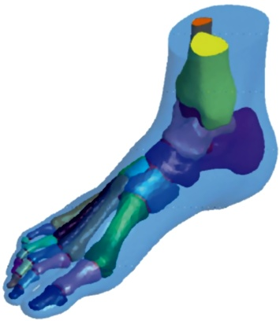
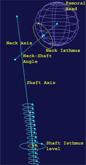

MIMICS FEA/CFD Modülü ile Örnek Vaka Çalýþmalarý:
Beyin tümörleri için hastaya özel kemoterapik ilaç salýnýmý:
Bu çalýþma bir mühendisin Mimics yardýmý ile bir beyin cerrahýna, hastaya özel beyin tümörlerinin tedavi planlamasýnda nasýl yardýmcý olabileceðini ortaya koymaktadýr. Çünkü ilaç dozajý ve tümör davranýþý, Mimics' in FEA modülü ile hassas bir þekilde modellenebilen tümör büyüklüðü ve yerinden, büyük ölçüde etkilenmektedir. Detaylý CFD analizi, tümör alma ameliyatýndan sonra, bahsedilen tedavi planý ile beyin basýncýnýn hýzlýca deðiþtiðini göstermektedir.
Ameliyat sonrasý carmustine konsantrasyonu geliþimi
Bu vakada araþtýrmacýlar, beyin tümörlerinde ameliyat sonrasý ilaç salýnýmý için Gliadel® wafers'ý nasýl kullanacaklarýný keþfettiler. Gliadel ® Wafers' ýn hasta ölümlerini azalttýðý kanýtlanmýþtýr, fakat ne transport mekanizmasý ne de optimal dozaj formlarý þuana kadar detaylýca incelenmemiþtir. Týbbi görüntüleme teknolojisindeki son yenilikler sayesinde yapýlabilen hassas ekstraksiyon için beyin doku geometrisinin parametreleri, tümör boyutu ve konumu gibi, tümör tedavisinde çok önemlidir.
Mimics; MRI' dan beyin dokusu rekonstrüksiyonu ile simülasyon alanýna dönüþüm arasýnda mükemmel bir köprü oluþturmuþtur. Mimics FEA/CFD modülü, MRI' dan gelen görüntüleri üç yüzey objesine (beyin dokusu, beyin tümörü ve ventrikül) dönüþtürmek için kullanýldý. Böylece tümör yeri ve konumu hassas bir þekilde modellenerek, CFD analizine hazýr hale getirildi.
Anatomik detaylý 3 boyutlu ayak modeli için Mimics ile non-lineer sonlu elamanlar analizi için modelleme:
Sonlu elemanlar analizi, ayak üzerindeki gerilim daðýlýmlarýnýn ve bunlarýn insan konforuna etkilerinin anlaþýlmasý için güçlü bir araçtýr. Mekanik olarak ve ayný zamanda ayak deviyasyonlarý olmadan vücut aðýrlýðýný desteklemek için optimize edilen ve þüpheli/riskli plantar bölgelerde temas basýncý düþürücü gibi davranan ayakkabý astarý, ayak konforunu arttýrabilir. Ýnsan ayak yapýsýnýn geometrik olarak kompleks olmasý, ayaðýnýn biyomekanik davranýþlarýnýn tam anlamýyla simule edilebilmesi için, 3 boyutlu modellenmesini gerektirmektedir. Bu çalýþma araþtýrmacýlara MIMICS yazýlýmý ile, hassas ve anatomik detaylý bir 3 boyutlu ayak modelinin sonlu elemanlar analizinin nasýl kolayca ve hýzlýca yapýlabildiðini göstermektedir.
Bilgisayarlý Tomografiden alýnan görüntü verileri (DICOM görüntüleri) MIMICS yazýlýmýna aktarýldý. Böylece baðýmsýz dosyalar ve 3 boyutlu model oluþturuldu. Ayak kemiklerinin ve yumuþak dokularýnýn tam olarak belirlenmesi için 30 farklý bölge tanýmlandý.
Mimics'de ayaðýn saggital görüntüsü
Mimics'de kemik yapýsý ve yumuþak doku birleþtirmesi
MIMICS ile oluþturulan her bir kemik ve edilen yumuþak doku hacimleri, 3 boyutlu olarak rekonstrükte edildi. CATIA programýna STL dosyalarý olarak aktarýlan verilerle, segmentasyon iþlemi ile rekonstrükte edilmeyen kýkýrdak yapýsý modellendi ve yumuþak doku hacminin elde edebilmek için hacim boolean iþlemi uygulandý. Daha sonra bu veriler ile ABAQUS paket programýna aktarýlan veriler ile hassas ve gerçeðe uygun olarak model üzerinde sonlu elemanlar analizi uygulandý.
 |
|
CATIA'da kemik yapýsý, kýkýrdak ve yumuþak doku birleþimi |
ABAQUS ile VON-Mises gerilim daðýlýmý analizi |
Morfolojik Proximal Femur çalýþmasý: 3 boyutlu tersine mühendislik kullanýlarak yeni bir geometrik deðerlendirme modeli
Bu çalýþma, proximal kadaverik femurun 3 boyutlu iç ve dýþ geometrisi elde etmek ve analizini gerçekleþtirmek için tersine mühendislik teknikleri ile kombine edilmiþ bilgisayarlý tomografi görüntüleri kullanýlarak, yeni bir metot sunmaktadýr. Bilgisayarlý tomografiden elde edilen görüntüler rekonstrükte edildi ve tersine mühendislik metotlarýna dayalý 2 ve 3 boyutlu uygun algoritmalar tahmin edildi. Bilgisayarlý tomografiden alýnan görüntüler MIMICS yazýlýmý ile optimize edilip, IGES paket programýna export edildi.
Ýç ve dýþ kortikal sýnýrlarýnda optimize edilmiþ segmentasyon
için iki farklý Thresholding deðeri uygulamasý
IGES yazýlýmý ile 3 boyutlu model üzerinde femurun iç ve dýþ konturlarý belirlenip, bir tersine mühendislik CAD yazýlýmýna aktarýldý. Proximal femurun belirli bölümlerinin þekli, elips, daire ve küre gibi gerçek geometriye en uygun geometrik konfigürasyon ile elde edildi ve her bir femur için; femoral kafa çapý, femoral boyun ekseni, femoral þaft ekseni, anteversiyon açýsý ve boyun þaft açýsý hesaplandý. Bu çalýþma ile elde edilen veriler, proximal femur geometrisi ile ilgili çalýþmalarý temsil etmekte olup, femoral ve trokantorik týrnak sistemlerinde uygun boyut ve þekil tasarýmý için kullanýlabilir.
|
|
 |
IGES' de 3 Boyutlu model üzerindeki iç ve dýþ konturlar |
Farklý oluþumlar ile Proximal Femurun geometrik tahminleri |
Farklý oluþumlar ile Proximal Femurun geometrik tahminleri |
|